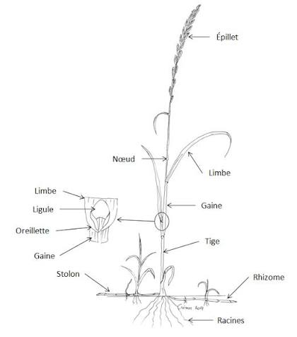
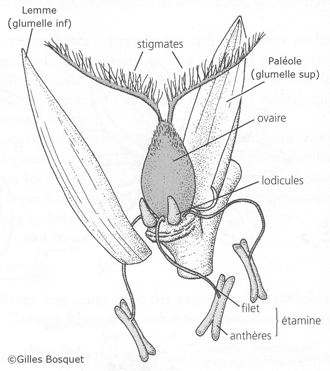
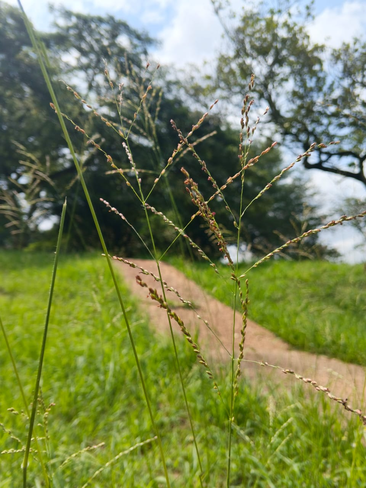
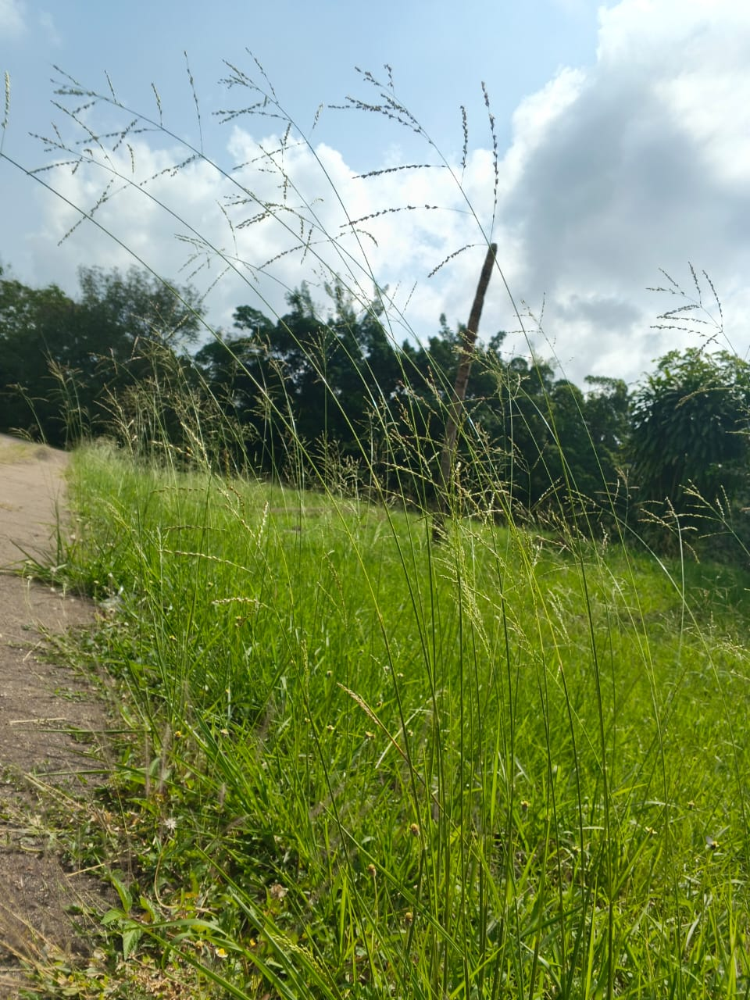

Graminées
Des plantes herbacées essentielles à l'alimentation humaine et animale
Appareil végétatif
- Feuilles : longues et étroites, généralement composées d'une gaine, d'une ligule et d'un limbe.
- Tige (chaume) : généralement cylindrique, composée de nœuds et d'entre-nœuds.
- Racines : souvent fasciculées, elles assurent l'absorption de l'eau et des sels minéraux.
- Inflorescence : regroupement de fleurs généralement organisées en épillets.

Reproduction

Observation sur terrain


Espèce : Graminée, Megathyrsus maximus (Jacq.) B.K.Simon & S.W.L.Jacobs
Milieu : Sec, Soleil,Sol
GPS : 6.8918536 ; -5.2251265
Date : 21/11/2026